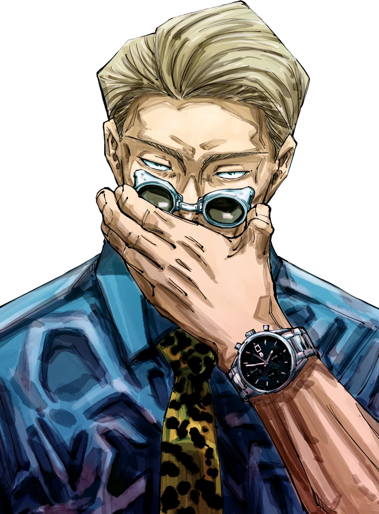

¿Quien es?
Kento Nanami (七海建人 Nanami Kento?) es uno de los personajes de la serie manga Jujutsu Kaisen. Fue un chamán de primer grado, antiguo alumno del Colegio Técnico de Magia Metropolitana de Tokio y compañero de Yu Haibara.
Apariencia
|

Imagen de Nanami |
Nanami fue un hombre de cuerpo bien proporcionado y bastante alto, llegando a medir 184 centímetros. En el manga, poseía dos distintos tipos de color de cabello, uno castaño claro y otro rubio, peinado con una raya al costado; en el anime, su cabello se mantiene rubio. Solía tener cejas delgadas y ojos pequeños. Tras los eventos ocurridos durante el Arco de El Incidente de Shibuya, perdió su ojo izquierdo y recibió múltiples quemaduras que se extendieron desde la parte izquierda de su cabeza hasta su abdomen.
Solía ser un oficinista, por lo que, incluso después de haber renunciado, vestía trajes de negocios. Su traje habitual, consistía en una camisa azul, una corbata de color claro con puntos negros, un blazer y pantalones de color canela, y en sus pies utilizaba zapatos de vestir.
Como estudiante del Colegio Técnico de Magia Metropolitana de Tokio, usaba la chaqueta negra característica del colegio, con cuello alto completamente abotonada, pantalones y zapatos negros, además tenía el cabello largo y llevaba su espada enfundada dentro de una maleta negra. Después de graduarse del colegio, comenzó a utilizar chaquetas de rayas verticales sobre una camisa blanca con botones y corbata de color oscuro con puntos blancos por todas partes, pantalones a rayas verticales y zapatos negros.
Durante combate, utilizaba unos lentes oscuros que no tienen brazos; en el anime son representados con color gris y vidrios verdes. A diferencia de sus días como estudiante, llevaba su espada sujetada con unos tirantes detrás de su espalda y solía ocultarla con su saco.
Personalidad

Nanami con sus gafas características |
Fue un hombre muy inteligente, reservado y con un fuerte sentido de responsabilidad con su trabajo. Originalmente, fue un oficinista pero dejó su antiguo trabajo porque no producía un impacto importante en otros, sin embargo, como un chamán, se sentía mejor al ser capaz de cosechar pequeñas muestras de gratitud de personas inocentes. Por ejemplo, el haber ayudado a una empleada en la panadería a la que solía ir, fue suficiente para convencerlo de volver a su vida como chamán y poder seguir su camino sin remordimientos. Más allá de su duro exterior, fue un hombre de buenos valores morales.
Sabía cómo separar el sentimentalismo del trabajo, y confesó que sólo siguió su camino como chamán porque requería de más aptitud que trabajar en una oficina. La mayor parte del tiempo, mostraba una actitud indiferente y, a menudo, parecía muy distante y estoico.
Como uno de los mentores de Itadori, al principio se muestra el gran contraste que poseía contra Satoru Gojo. A diferencia de éste, afirmó que seguía estrictamente las decisiones de los altos mandos y, a pesar de que conoce a Gojo desde que ambos estudiaban en el Colegio Técnico de Magia Metropolitana de Tokio, declaró que confía y tiene fe en él pero no lo respeta a pesar de la mutua confianza que hay entre ellos.
Fue muy directo con lo que pensaba, y tendía a irritarse fácilmente, especialmente cuando se trataba de Itadori o su antiguo compañero, Yu Haibara. En un momento de la historia, incluso, declaró no aceptar al joven como chamán debido a que en su interior se encontraba Sukuna y, como tal, lo consideraba una bomba que podría explotar en cualquier momento. Su forma de pensar cambió cuando fue salvado por el joven.
Debido a las cuestiones vividas durante su pasado, trataba a Itadori como un niño porque no quería que deje ir su juventud por el simple hecho de convertirse en un chamán. Fue consciente de que ser un chamán era peligroso y que es un trabajo para la gente con un cierto grado de locura, por lo que le costaba respetar a los que se dedicaban a dicho trabajo.
Pese a que no encontraba una razón para haber vuelto a ser un chamán, era sumamente dedicado a su trabajo y se encargaba de realizarlas de la manera más eficiente posible. Aún después de ya no ser un oficinista, seguía manteniendo parte de la estructura de su antiguo trabajo, siguiendo un estricto horario en el que realizaba sus misiones como chamán, declarando que no trabajaba después de las 18:00 hrs, pero estaba dispuesto a trabajar «horas extra».
En el fondo, era un hombre que estaba agotado de su rutina sintiéndose totalmente desgastado y soñaba con abandonar su trabajo e irse a vivir a un lugar tranquilo teniendo una vida pacífica para poder tener esa paz que tanto anhelaba tener pero le era imposible conseguir.
A pesar de ser alguien que no se cuestionaba el nivel de sus habilidades, siempre se sintió un completo inútil y reveló que, luego de encontrar a Kiyotaka Ijichi herido, sintió impotencia ante lo débil que es. Constantemente se preguntaba, dudaba y cuestionaba sus capacidades para salvar a otros. Incluso, hasta en sus últimos momentos de vida, se cuestionó que huyó luego de lo sucedido en su pasado, sin lograr nada admirable y regresó a seguir como un chamán sin claros motivos. Al final, sólo fue un hombre desgastado por las prácticas cotidianas de la vida que le robaron su juventud, le quitaron a quién más quería y lo transformaron en un adulto.